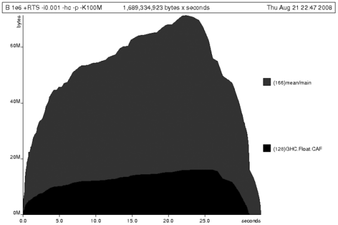

{% include JB/setup %}
{% raw %}
<div>

    <a name="toppage" class="calibre5" id="toppage"></a>
    <table width="100%" border="0" cellspacing="0" cellpadding="0" class="sfbody">
      <tr valign="top" class="calibre6">
        <td class="calibre7">
          <a name="MainContent" class="calibre5" id="MainContent"></a>
          <table width="95%" class="sfbody">
            <tr class="calibre6">
              <td class="v">
                <!--Copyright (c) 2002 Safari Tech Books Online-->
                <table width="100%" border="0" cellspacing="0" cellpadding="2" class="sfbody">
                  <tr class="calibre6">
                    <td valign="middle" class="v1" height="5">
                      
                    </td>
                  </tr>
                  <tr class="calibre6">
                    <td valign="middle" class="v1">
                      <table cellpadding="0" cellspacing="0" border="0" width="100%" class="sfbody">
                        <tr class="calibre6">
                          <td class="v"><span class="calibre9"> </span>
                   
                  <span class="calibre9">   </span>
             <span class="calibre9"> </span></td>
                        </tr>
                      </table>
                    </td>
                    <td class="v1"/>
                    <td valign="middle" class="v2"> 
           
          <span class="calibre9"><a target="_self" href="I_sect125_d1e48477.html" title="Previous section" class="calibre13"></a></span>
				
				 
				
				<span class="calibre9"><a target="_self" href="I_sect125_d1e49110.html" title="Next section" class="calibre13"></a></span></td>
                  </tr>
                </table>
                <div id="section" class="calibre15">
                  <table width="100%" border="0" cellspacing="0" cellpadding="0" class="sfbody1">
                    <tr class="calibre16">
                      <td valign="top" class="v3">Safari IT Books Language Constructs Functional Programming Haskell Safari IT Books Programming Programming Programming Bryan O'Sullivan  Donald Bruce Stewart  John Goerzen  O'Reilly Media, Inc. Real World Haskell, 1st Edition<a name="I_sect125_d1e48856" class="calibre27" id="I_sect125_d1e48856"></a><h3 id="title-IDA1BJUD" class="docSection1Title">25.2. Controlling Evaluation</h3><a name="x_ZK1" class="calibre27" id="x_ZK1"></a><p class="docText">We have a number of options if we want to write our loop
    to traverse the list only once. For example, we can write the loop as a
    fold over the list or via explicit recursion on the list structure.
    Sticking to the high-level approaches, we'll try a fold first:</p><pre class="calibre39">-- file: ch25/B.hs
mean :: [Double] -&gt; Double
mean xs = s / fromIntegral n
  where
    (n, s)     = foldl k (0, 0) xs
    k (n, s) x = (n+1, s+x)</pre><br class="calibre48"/>
<a name="x_aK1" class="calibre27" id="x_aK1"></a><p class="docText">Now, instead of taking the sum of the list and retaining
    the list until we can take its length, we left-fold over the list,
    accumulating the intermediate sum and length values in a pair (and we must
    left-fold, since a right-fold would take us to the end of the list and
    work backwards, which is exactly what we're trying to avoid).</p><a name="x_bK1" class="calibre27" id="x_bK1"></a><p class="docText">The body of our loop is the <i class="docEmphasis">k</i> function, which takes the intermediate loop
    state and the current element and returns a new state with the length
    increased by one and the sum increased by the current element. When we run
    this, however, we get a stack overflow:</p><pre class="calibre39">$ <b class="calibre40">ghc -O2 --make B.hs -fforce-recomp</b>$ <b class="calibre40">time ./B 1e6</b>
Stack space overflow: current size 8388608 bytes.
Use `+RTS -Ksize' to increase it.
./B 1e6  0.44s user 0.10s system 96% cpu 0.565 total</pre><a name="x_cK1" class="calibre27" id="x_cK1"></a><p class="docText">We traded wasted heap for wasted stack! In fact, if we
    increase the stack size to the size of the heap in our previous
    implementation, using the <tt class="calibre34">-K</tt> runtime flag, the program runs
    to completion and has similar allocation figures:</p><pre class="calibre39">$ <b class="calibre40">ghc -O2 --make B.hs -prof -auto-all -caf-all -fforce-recomp</b>
[1 of 1] Compiling Main             ( B.hs, B.o )
Linking B ...
$ <b class="calibre40">time ./B 1e6 +RTS -i0.001 -hc -p -K100M</b>
500000.5
./B 1e6 +RTS -i0.001 -hc -p -K100M  38.70s user 0.27s system 99% cpu 39.241 total</pre><a name="x_dK1" class="calibre27" id="x_dK1"></a><p class="docText">Generating the heap profile, we see all the allocation is
    now in <tt class="calibre34">mean</tt>. See <a class="docLink" href="#curveisshaped">Figure 25-4</a>.</p><a name="curveisshaped" class="calibre27" id="curveisshaped"></a><p class="calibre37"><div class="calibre61"><h5 class="docTableTitle">Figure 25-4. Graph of stack usage. The curve is shaped like a hump, with mean
      representing 80%, and GHC.Real.CAF the other 20%.</h5><a name="I_mediaobject25_d1e48907" class="calibre27" id="I_mediaobject25_d1e48907"></a></div></p><p class="docText"></p><br class="calibre48"/><a name="x_eK1" class="calibre27" id="x_eK1"></a><p class="docText">The question is: why are we building up more and more
    allocated state, when all we are doing is folding over the list? This, it
    turns out, is a classic space leak due to excessive laziness.</p><a name="I_sect125_d1e48856d1e49191" class="calibre27" id="I_sect125_d1e48856d1e49191"></a><h4 id="title-IDACEJUD" class="docSection1Title">25.2.1. Strictness and Tail Recursion</h4><a name="x_fK1" class="calibre27" id="x_fK1"></a><p class="docText">The problem<a name="ch25-strictness" class="calibre27" id="ch25-strictness"></a><a name="I_indexterm25_d1e48923" class="calibre27" id="I_indexterm25_d1e48923"></a><a name="I_indexterm25_d1e48926" class="calibre27" id="I_indexterm25_d1e48926"></a> is that our left-fold, <i class="docEmphasis">foldl</i>, is too lazy. What we want is a
      tail-recursive loop, which can be implemented effectively as a
      <tt class="calibre34">goto</tt>, with no state left on the stack. In this case though,
      rather than fully reducing the tuple state at each step, a long chain of
      thunks is being created, which is evaluated only towards the end of the
      program. At no point do we demand reduction of the loop state, so the
      compiler is unable to infer any strictness and must reduce the value
      purely lazily.</p><a name="x_gK1" class="calibre27" id="x_gK1"></a><p class="docText">What we need to do is tune the evaluation strategy
      slightly—lazily unfolding the list, but strictly accumulating the fold
      state. The standard approach here is to replace <i class="docEmphasis">foldl</i> with <i class="docEmphasis">foldl'</i>, from <a name="I_indexterm25_d1e48946" class="calibre27" id="I_indexterm25_d1e48946"></a><a name="I_indexterm25_d1e48949" class="calibre27" id="I_indexterm25_d1e48949"></a><a name="I_indexterm25_d1e48952" class="calibre27" id="I_indexterm25_d1e48952"></a>the <tt class="calibre34">Data.List</tt> module:</p><pre class="calibre39">-- file: ch25/C.hs
mean :: [Double] -&gt; Double
mean xs = s / fromIntegral n
  where
    (n, s)     = foldl' k (0, 0) xs
    k (n, s) x = (n+1, s+x)</pre><br class="calibre48"/>
<a name="x_hK1" class="calibre27" id="x_hK1"></a><p class="docText">However, if we run this implementation, we see that we
      still haven't quite got it right:</p><pre class="calibre39">$ <b class="calibre40">ghc -O2 --make C.hs</b>
[1 of 1] Compiling Main             ( C.hs, C.o )
Linking C ...
$ <b class="calibre40">time ./C 1e6</b>
Stack space overflow: current size 8388608 bytes.
Use `+RTS -Ksize' to increase it.
./C 1e6  0.44s user 0.13s system 94% cpu 0.601 total</pre><a name="x_iK1" class="calibre27" id="x_iK1"></a><p class="docText">Still not strict enough! Our loop is continuing to
      accumulate unevaluated state on the stack. The problem here is that
      <i class="docEmphasis">foldl'</i> is only outermost
      strict:</p><pre class="calibre39">-- file: ch25/Foldl.hs
foldl' :: (a -&gt; b -&gt; a) -&gt; a -&gt; [b] -&gt; a
foldl' f z xs = lgo z xs
    where lgo z []     = z
          lgo z (x:xs) = let z' = f z x in z' `seq` lgo z' xs</pre><br class="calibre48"/>
<a name="x_jK1" class="calibre27" id="x_jK1"></a><p class="docText">This loop uses <i class="docEmphasis">`seq`</i> to reduce the accumulated state at each
      step, but only to the outermost constructor on the loop state. That is,
      <tt class="calibre34">seq</tt> reduces an expression to weak head normal form (WHNF).
      <a name="I_indexterm25_d1e48989" class="calibre27" id="I_indexterm25_d1e48989"></a><a name="I_indexterm25_d1e48992" class="calibre27" id="I_indexterm25_d1e48992"></a>Evaluation stops on the loop state once the first
      constructor is reached. In this case, the outermost constructor is the
      tuple wrapper, <tt class="calibre34">(,)</tt>, which isn't deep enough. The problem is
      still the unevaluated numeric state inside the tuple.</p><a name="I_sect125_d1e48856d1e49276" class="calibre27" id="I_sect125_d1e48856d1e49276"></a><h4 id="title-IDAKHJUD" class="docSection1Title">25.2.2. Adding Strictness</h4><a name="x_kK1" class="calibre27" id="x_kK1"></a><p class="docText">There are a number of ways to make this function fully
      strict. We can, for example, add our own strictness hints to the
      internal state of the tuple, yielding a truly tail-recursive
      loop:</p><pre class="calibre39">-- file: ch25/D.hs
mean :: [Double] -&gt; Double
mean xs = s / fromIntegral n
  where
    (n, s)     = foldl' k (0, 0) xs
    k (n, s) x = n `seq` s `seq` (n+1, s+x)</pre><br class="calibre48"/>
<a name="x_lK1" class="calibre27" id="x_lK1"></a><p class="docText">In this variant, we step inside the tuple state and
      explicitly tell the compiler that each state component should be reduced
      on each step. This gives us a version that does, at last, run in
      constant space:</p><pre class="calibre39">$ <b class="calibre40">ghc -O2 D.hs --make</b>
[1 of 1] Compiling Main             ( D.hs, D.o )
Linking D ...
</pre><a name="x_mK1" class="calibre27" id="x_mK1"></a><p class="docText">If we run this, with allocation statistics enabled, we
      get the satisfying result:</p><pre class="calibre39">$ <b class="calibre40">time ./D 1e6 +RTS -sstderr</b>
./D 1e6 +RTS -sstderr 
500000.5
256,060,848 bytes allocated in the heap
     43,928 bytes copied during GC (scavenged)
     23,456 bytes copied during GC (not scavenged)
     45,056 bytes maximum residency (1 sample(s))

        489 collections in generation 0 (  0.00s)
          1 collections in generation 1 (  0.00s)

          1 Mb total memory in use

  INIT  time    0.00s  (  0.00s elapsed)
  MUT   time    0.12s  (  0.13s elapsed)
  GC    time    0.00s  (  0.00s elapsed)
  EXIT  time    0.00s  (  0.00s elapsed)
  Total time    0.13s  (  0.13s elapsed)

  %GC time       2.6%  (2.6% elapsed)

  Alloc rate    2,076,309,329 bytes per MUT second

  Productivity  97.4% of total user, 94.8% of total elapsed

./D 1e6 +RTS -sstderr  0.13s user 0.00s system 95% cpu 0.133 total
</pre><a name="x_nK1" class="calibre27" id="x_nK1"></a><p class="docText">Unlike our first version, this program is 97.4%
      efficient, spending only 2.6% of its time doing garbage collection, and
      it runs in a constant 1 megabyte of space. It illustrates a nice balance
      between mixed strict and lazy evaluation, with the large list unfolded
      lazily, while we walk over it strictly. The result is a program that
      runs in constant space, and does so quickly.</p><a name="idd1e49301" class="calibre27" id="idd1e49301"></a><h5 id="title-IDAPIJUD" class="docSection3Title">25.2.2.1. Normal form reduction</h5><a name="x_oK1" class="calibre27" id="x_oK1"></a><p class="docText">There are a number of other ways we could have
        addressed the strictness issue here. For deep strictness, we can use
        the <tt class="calibre34">rnf</tt> function,<a name="I_indexterm25_d1e49033" class="calibre27" id="I_indexterm25_d1e49033"></a> part of the parallel strategies library (along with
        <tt class="calibre34">using</tt>), which unlike <tt class="calibre34">seq</tt> reduces to the
        fully evaluated "normal form" (hence its name). We can write as such a
        <span class="docEmphasis">deep seq</span> fold:</p><pre class="calibre39">-- file: ch25/E.hs
import System.Environment
import Text.Printf
import Control.Parallel.Strategies

main = do
    [d] &lt;- map read `fmap` getArgs
    printf "%f\n" (mean [1..d])

foldl'rnf :: NFData a =&gt; (a -&gt; b -&gt; a) -&gt; a -&gt; [b] -&gt; a
foldl'rnf f z xs = lgo z xs
    where
        lgo z []     = z
        lgo z (x:xs) = lgo z' xs
            where
                z' = f z x `using` rnf

mean :: [Double] -&gt; Double
mean xs = s / fromIntegral n
  where
    (n, s)     = foldl'rnf k (0, 0) xs
    k (n, s) x = (n+1, s+x) :: (Int, Double)</pre><br class="calibre48"/>
<a name="x_pK1" class="calibre27" id="x_pK1"></a><p class="docText">We change the implementation of <tt class="calibre34">foldl'</tt>
        to reduce the state to normal form, using the <tt class="calibre34">rnf</tt>
        strategy. This also raises an issue that we avoided earlier: the type
        inferred for the loop accumulator state. Previously, we relied on type
        defaulting to infer a numeric, integral type for the length of the
        list in the accumulator, but switching to <tt class="calibre34">rnf</tt> introduces
        the <tt class="calibre34">NFData</tt> class constraint, and we can no longer rely on
        defaulting to set the length type.</p><a name="idd1e49339" class="calibre27" id="idd1e49339"></a><h5 id="title-IDATJJUD" class="docSection3Title">25.2.2.2. Bang patterns</h5><a name="x_qK1" class="calibre27" id="x_qK1"></a><p class="docText">Perhaps the cheapest way, syntactically, to add
        required strictness to code that's excessively lazy is via bang
        patterns (whose name comes from pronunciation of the "!" character as
        "bang"), a language extension introduced with the following
        pragma:</p><pre class="calibre39">-- file: ch25/F.hs
{-# LANGUAGE BangPatterns #-}</pre><br class="calibre48"/>
<a name="x_rK1" class="calibre27" id="x_rK1"></a><p class="docText">With bang patterns, we can hint at strictness on any
        binding form, making the function strict in that variable. Much as
        explicit type annotations can guide type inference, bang patterns can
        help guide strictness inference. Bang patterns are a language
        extension and are enabled with the <tt class="calibre34">BangPatterns</tt> language
        pragma. We can now rewrite the loop state to be simply:<a name="I_indexterm25_d1e49075" class="calibre27" id="I_indexterm25_d1e49075"></a></p><pre class="calibre39">-- file: ch25/F.hs
mean :: [Double] -&gt; Double
mean xs = s / fromIntegral n
  where
    (n, s)       = foldl' k (0, 0) xs
    k (!n, !s) x = (n+1, s+x)</pre><br class="calibre48"/>
<a name="x_sK1" class="calibre27" id="x_sK1"></a><p class="docText">The intermediate values in the loop state are now
        strict, and the loop runs in constant space:</p><pre class="calibre39">$ <b class="calibre40">ghc -O2 F.hs --make</b>$ <b class="calibre40">time ./F 1e6 +RTS -sstderr</b>
./F 1e6 +RTS -sstderr 
500000.5
256,060,848 bytes allocated in the heap
     43,928 bytes copied during GC (scavenged)
     23,456 bytes copied during GC (not scavenged)
     45,056 bytes maximum residency (1 sample(s))

        489 collections in generation 0 (  0.00s)
          1 collections in generation 1 (  0.00s)

          1 Mb total memory in use

  INIT  time    0.00s  (  0.00s elapsed)
  MUT   time    0.14s  (  0.15s elapsed)
  GC    time    0.00s  (  0.00s elapsed)
  EXIT  time    0.00s  (  0.00s elapsed)
  Total time    0.14s  (  0.15s elapsed)

  %GC time       0.0%  (2.3% elapsed)

  Alloc rate    1,786,599,833 bytes per MUT second

  Productivity 100.0% of total user, 94.6% of total elapsed

./F 1e6 +RTS -sstderr  0.14s user 0.01s system 96% cpu 0.155 total</pre><a name="x_tK1" class="calibre27" id="x_tK1"></a><p class="docText">In large projects, when we are investigating memory
        allocation hot spots, bang patterns are the cheapest way to
        speculatively modify the strictness properties of some code, as
        they're syntactically less invasive than other methods.</p><a name="idd1e49372" class="calibre27" id="idd1e49372"></a><h5 id="title-IDA3KJUD" class="docSection3Title">25.2.2.3. Strict data types</h5><a name="x_uK1" class="calibre27" id="x_uK1"></a><p class="docText">Strict data types are another effective way to
        provide strictness information to the compiler. By default, Haskell
        data types are lazy, but it is easy enough to add strictness
        information to the fields of a data type that then propagate through
        the program. We can declare a new strict pair type, for
        example:</p><pre class="calibre39">-- file: ch25/G.hs
data Pair a b = Pair !a !b</pre><br class="calibre48"/>
<a name="x_vK1" class="calibre27" id="x_vK1"></a><p class="docText">This creates a pair type whose fields will always be
        kept in WHNF. We can now rewrite our loop as:</p><pre class="calibre39">-- file: ch25/G.hs
mean :: [Double] -&gt; Double
mean xs = s / fromIntegral n
  where
    Pair n s       = foldl' k (Pair 0 0) xs
    k (Pair n s) x = Pair (n+1) (s+x)</pre><br class="calibre48"/>
<a name="x_wK1" class="calibre27" id="x_wK1"></a><p class="docText">This implementation again has the same efficient,
        constant space behavior. At this point, to squeeze the last drops of
        performance out of this code, though, we have to dive a bit
        deeper.</p>
<a href="21061538.html" class="calibre2"></a><ul class="calibre18"></ul></td>
                    </tr>
                  </table>
                  <table width="100%" border="0" cellspacing="0" cellpadding="2" class="sfbody1">
                    <tr class="calibre16">
                      <td valign="middle" class="v3" height="5">
                        
                      </td>
                    </tr>
                    <tr class="calibre16">
                      <td valign="middle" class="v3">
                        <table cellpadding="0" cellspacing="0" border="0" width="100%" class="sfbody1">
                          <tr class="calibre16">
                            <td class="v5"><span class="calibre33"> </span>
                   
                  <span class="calibre33">   </span>
             <span class="calibre33"> </span></td>
                          </tr>
                        </table>
                      </td>
                      <td class="v3"/>
                      <td valign="middle" class="v6"> 
           
          <span class="calibre33"><a target="_self" href="I_sect125_d1e48477.html" title="Previous section" class="calibre2"></a></span>
				
				 
				
				<span class="calibre33"><a target="_self" href="I_sect125_d1e49110.html" title="Next section" class="calibre2"></a></span></td>
                    </tr>
                  </table>
                  <table width="100%" border="0" cellspacing="0" cellpadding="2" class="sfbody1">
                    <tr class="calibre16">
                      <td valign="top" class="v6">
                        <span class="calibre33"></span>
                      </td>
                    </tr>
                  </table>
                </div>
                <!--IP User 2-->
              </td>
            </tr>
          </table>
        </td>
        <td class="calibre7">
                         
                      </td>
      </tr>
      <tr class="calibre6">
        <td colspan="3" valign="bottom" class="calibre7">
          <br class="calibre20"/>
          <p class="v4"></p>
          <br class="calibre20"/>
        </td>
      </tr>
    </table>
  </div>

{% endraw %}

